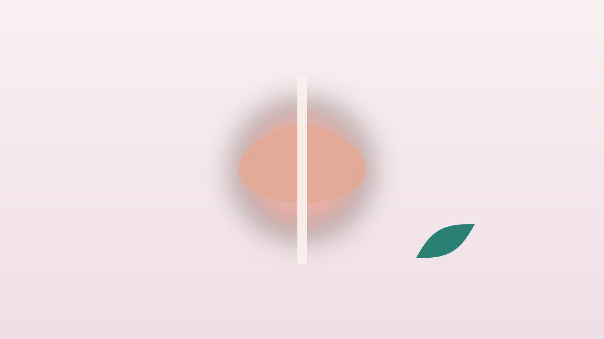

건강 칼럼 · 인천 전립선염 한의원
아랫배와 회음부가 뻐근하고 소변이 시원찮다면, 만성 전립선염 한방 치료

나의 증상, 이런 모습인가요?
- 회음부(음낭과 항문 사이)나 아랫배가 묵직하고 뻐근하다
- 소변이 자주 마렵고, 보고 나서도 시원하지 않다
- 오래 앉아 있거나 자전거를 탄 뒤 통증이 심해진다
- 사정할 때나 사정 후에 통증이 있다
- 고환, 사타구니, 허리 아래가 당기듯 아프다
- 증상 때문에 걱정이 늘고 잠을 설친다
이 체크리스트는 진단 도구가 아니라 상담이 필요한지 가늠해 보는 참고용입니다.
전립선염에는 어떤 종류가 있나요?
미국 국립보건원(NIH)은 전립선염을 네 가지로 나눕니다. 갑자기 고열과 오한, 배뇨통이 생기는 급성 세균성, 같은 균에 의한 요로감염이 반복되는 만성 세균성, 세균은 뚜렷하지 않은데 골반 통증과 배뇨 불편이 3개월 넘게 이어지는 만성 전립선염/만성 골반통증증후군, 증상 없이 검사에서만 염증이 보이는 무증상 염증성입니다. 진료실에서 만나는 만성 전립선염의 대부분은 세 번째 유형입니다.
만성 골반통증증후군은 세균보다 골반저 근육의 긴장, 신경의 예민해짐, 스트레스와 수면 부족이 함께 얽혀 생기는 경우가 많습니다. 그래서 항생제를 여러 번 먹어도 잘 낫지 않았다는 분이 적지 않고, 통증과 배뇨, 생활 습관을 함께 살피는 치료가 필요합니다. 증상 점수(NIH-CPSI)를 기록하면 치료 효과를 비교하는 데 도움이 됩니다.
비뇨의학과나 응급실로 먼저 가야 하는 신호
- 38도 이상의 열과 오한, 몸살과 함께 소변이 아프다
- 소변이 전혀 나오지 않거나 방울방울만 나온다
- 소변이나 정액에 피가 섞여 나온다
- 옆구리가 아프고 열이 난다
- 50세 이상이면서 배뇨 증상이 새로 생겼다 (전립선비대증·전립선암 확인)
급성 세균성 전립선염과 요폐는 빠른 치료가 필요하며, 혈뇨나 혈정액은 다른 질환을 확인하는 검사가 먼저입니다.
한의학은 전립선염을 어떻게 보나요?
한의학 고전에는 전립선이라는 이름이 없지만, 소변이 탁하고 요도가 찌릿한 증상을 정탁(精濁)·백탁(白濁)으로, 소변이 잦고 시원하지 않으며 아픈 증상을 임증(淋證)으로 다루었습니다. 특히 피로가 쌓이면 재발하는 것을 노림(勞淋)이라 하여 따로 구분했는데, 무리하면 다시 도지는 만성 전립선염의 경과와 닮았습니다.
원인으로는 기름진 음식과 술로 생긴 습열(濕熱)이 아래로 몰려 골반에 머무는 것, 오래 앉아 있거나 긴장이 쌓여 기혈이 막히는 기체혈어(氣滯血瘀), 과로와 수면 부족으로 비뇨생식 기능을 맡은 신(腎)의 기운이 지치는 것을 꼽았습니다. 처음에는 습열이 중심이다가 오래되면 막힘과 허약이 섞이는 경우가 많아, 시기에 따라 처방의 비중을 바꾸는 것이 특징입니다.
나는 어떤 유형일까?
1. 습열하주(濕熱下注) 열이 아래로 몰린 유형
- 이런 분에게 많아요
- 술과 기름진 음식을 즐기는 분
- 나타나는 모습
- 소변이 진하고 따끔거리며 회음부가 화끈하다
- 함께 오는 몸의 신호
- 잔뇨감, 입이 쓰고 끈적함, 음낭 습함
- 진찰에서 보이는 모습
- 설태가 누렇고 끈적하며 맥이 미끄럽고 빠름
- 치료 방향
- 습과 열을 걷어 내는 방향 (팔정산·용담사간탕 계열)
- 오늘부터 해 볼 것
- 술과 매운 음식을 4주 동안 끊어 보세요.
2. 기체혈어(氣滯血瘀) 막혀서 아픈 유형
- 이런 분에게 많아요
- 오래 앉아 일하거나 긴장이 많은 분
- 나타나는 모습
- 회음부와 아랫배가 찌르듯 아프고 앉으면 심해진다
- 함께 오는 몸의 신호
- 사정 후 통증, 하복부 압통
- 진찰에서 보이는 모습
- 혀가 어둡고 반점이 있으며 맥이 껄끄러움
- 치료 방향
- 막힌 기혈을 풀어 골반 순환을 돕는 방향 (소복축어탕 계열)
- 오늘부터 해 볼 것
- 50분 앉으면 5분은 일어나 걸으세요.
3. 신음허(腎陰虛) 지치고 열이 뜨는 유형
- 이런 분에게 많아요
- 과로와 밤샘이 잦은 분
- 나타나는 모습
- 오후에 회음부가 뻐근하고 소변 끝에 찌릿하다
- 함께 오는 몸의 신호
- 허리 시큰함, 입 마름, 식은땀
- 진찰에서 보이는 모습
- 혀가 붉고 설태가 적으며 맥이 가늘고 빠름
- 치료 방향
- 부족한 진액을 채우고 뜬 열을 내리는 방향 (지백지황환 계열)
- 오늘부터 해 볼 것
- 무리한 야근을 줄이고 수면 시간을 7시간 이상 확보하세요.
4. 신양허(腎陽虛) 차고 기운 없는 유형
- 이런 분에게 많아요
- 몸이 차고 피로가 오래된 분
- 나타나는 모습
- 아랫배와 회음부가 시리고 소변이 잦으며 힘이 없다
- 함께 오는 몸의 신호
- 추위를 탐, 허리·무릎 시림, 성기능 저하
- 진찰에서 보이는 모습
- 혀가 담백하고 맥이 깊고 약함
- 치료 방향
- 아랫배를 데우고 기운을 북돋는 방향 (제생신기환 계열)
- 오늘부터 해 볼 것
- 아랫배와 허리를 따뜻하게 하세요.
한의원에서는 어떻게 진찰하나요?
- 검사 결과 확인: 소변 검사, 전립선 특이항원(PSA), 초음파 등 비뇨의학과 검사 결과를 함께 봅니다.
- 증상 점수: 통증 부위와 강도, 배뇨 증상, 삶의 질을 점수로 기록해 치료 전후를 비교합니다.
- 생활 문진: 앉아 있는 시간, 음주, 수면, 스트레스, 운동 습관을 여쭙니다.
- 복진·설진·맥진: 아랫배의 긴장과 압통, 혀와 맥으로 유형을 판단합니다.
침·약침·한약 치료는 어떻게 하나요?
1. 침 치료
- 중극(中極)·관원(關元): 배꼽 아래 아랫배 가운데. 방광과 골반의 기능을 돕습니다.
- 차료(次髎): 엉치뼈의 두 번째 구멍 자리. 골반 통증에 씁니다.
- 삼음교(三陰交)·음릉천(陰陵泉): 다리 안쪽. 아래로 몰린 습열을 덜어 냅니다.
- 태충(太衝): 발등. 긴장으로 막힌 기운을 풉니다.
2021년 미국내과학회지(Annals of Internal Medicine)에 실린 무작위 연구에서는 만성 전립선염/만성 골반통증증후군 환자에게 8주간 침 치료를 했을 때 가짜 침 치료보다 증상 점수가 더 많이 좋아졌습니다. 효과는 사람마다 달라 증상 점수로 경과를 확인합니다.
2. 약침과 온열 요법
엉치와 허리 아래, 아랫배의 관련 경혈에 약침을 적용해 골반저 근육의 긴장을 풀어 줍니다. 아랫배와 회음부가 차고 뻐근한 분은 온열 요법을 함께 받을 수 있습니다.
3. 한약
유형별 탕약을 기본으로, 습열이 심한 시기에는 열을 걷는 약재를, 오래된 경우에는 순환과 기운을 돕는 약재의 비중을 높입니다. 항생제나 알파차단제, 진통제를 드시는 분은 약 이름을 알려 주세요.
원장님이 네이버 블로그에 진료 이야기와 건강 정보를 꾸준히 올리고 있습니다. 더 많은 이야기는 블로그에서 확인해 보세요.
블로그 보기치료는 어떤 순서로 진행되나요?
- 첫 진료 검사 결과를 확인하고 유형과 증상 점수를 기록합니다.
- 1~4주 주 2회 안팎의 침 치료와 약침, 탕약으로 통증과 배뇨 불편을 먼저 다룹니다.
- 4~8주 증상 점수를 비교하며 처방과 치료 간격을 조정합니다.
- 유지기 증상이 안정되면 생활 관리 위주로 이어 가고, 과로나 음주 뒤 재발 신호가 오면 일찍 관리합니다.
만성 전립선염은 좋아졌다가 무리하면 다시 도지는 경과가 흔해, 보통 8주 정도 경과를 보며 재발을 줄이는 습관까지 함께 잡습니다.
골반을 편하게 하는 생활 관리
- 앉는 습관: 오래 앉아 있지 말고, 가운데가 뚫린 방석을 써 회음부 압박을 줄입니다.
- 따뜻한 좌욕: 하루 10~15분 따뜻한 물에 좌욕하면 골반 근육이 풀리는 데 도움이 됩니다.
- 술·매운 음식·카페인: 증상을 키우는 경우가 많아 줄여 봅니다.
- 자전거: 장시간 자전거 타기는 증상이 가라앉을 때까지 피합니다.
- 수면과 스트레스: 잠이 부족하고 긴장이 쌓이면 통증이 예민해집니다.
다른 진료가 함께 필요한 경우
- 열과 오한이 있으면 비뇨의학과에서 항생제 치료를 먼저 받으세요.
- 50세 이상이라면 전립선 특이항원(PSA) 검사로 다른 질환을 확인하세요.
- 혈뇨나 혈정액은 비뇨의학과 검사가 필요합니다.
- 통증으로 우울감과 불면이 깊어졌다면 함께 치료하는 것이 좋습니다.
자주 묻는 질문 Q&A
- Q1. 항생제를 여러 번 먹었는데도 낫지 않아요.
- 만성 전립선염의 대부분은 세균이 원인이 아닌 만성 골반통증증후군이라, 골반의 긴장과 순환, 생활 습관을 함께 다루는 치료가 필요합니다.
- Q2. 전립선염이 성기능에 영향을 주나요?
- 통증과 피로, 걱정 때문에 성기능이 떨어졌다고 느끼는 분이 많습니다. 통증이 줄면 함께 나아지는 경우가 많습니다.
- Q3. 배우자에게 옮나요?
- 만성 골반통증증후군은 전염되지 않습니다. 세균성이 의심되면 검사로 확인합니다.
- Q4. 치료는 얼마나 받아야 하나요?
- 보통 8주 정도 증상 점수를 보며 경과를 확인합니다.
- Q5. 앉아서 일하는데 어떻게 하나요?
- 가운데가 뚫린 방석을 쓰고 50분마다 일어나 걸어 주세요.
- Q6. 술을 완전히 끊어야 하나요?
- 치료 기간에는 끊는 것이 좋고, 이후에도 증상이 다시 생기는지 보며 조절하세요.
- Q7. 전립선염이 전립선암이 되나요?
- 전립선염이 암으로 바뀐다는 근거는 없습니다. 다만 나이에 따라 정기 검진은 필요합니다.
- Q8. 약을 먹고 있는데 한약을 같이 먹어도 되나요?
- 함께 드실 수 있는 경우가 많습니다. 드시는 약을 알려 주시면 확인해 처방합니다.
함께 읽으면 좋은 칼럼
건강 칼럼 전체 보기 →


참고 자료
- Krieger JN, Nyberg L Jr, Nickel JC. NIH consensus definition and classification of prostatitis. JAMA, 1999 — 원문
- Sun Y, et al. Efficacy of Acupuncture for Chronic Prostatitis/Chronic Pelvic Pain Syndrome: A Randomized Trial. Annals of Internal Medicine, 2021 — 원문
- 질병관리청 국가건강정보포털 — 원문
※ 이 글은 일반적인 건강 정보이며, 개인의 상태에 따라 치료 방법과 결과는 다를 수 있습니다. 정확한 진단과 치료는 진료를 통해 결정됩니다. 침·약침 시술 후 드물게 멍, 통증 등이 생길 수 있습니다.